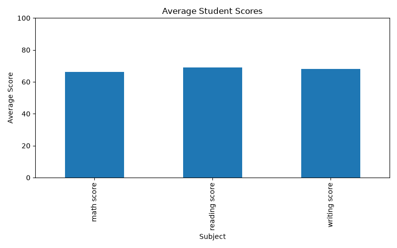
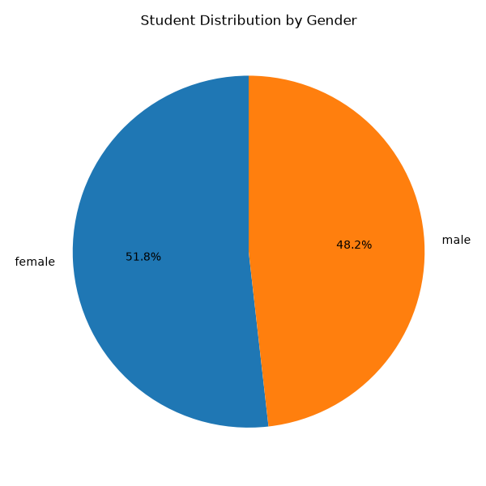
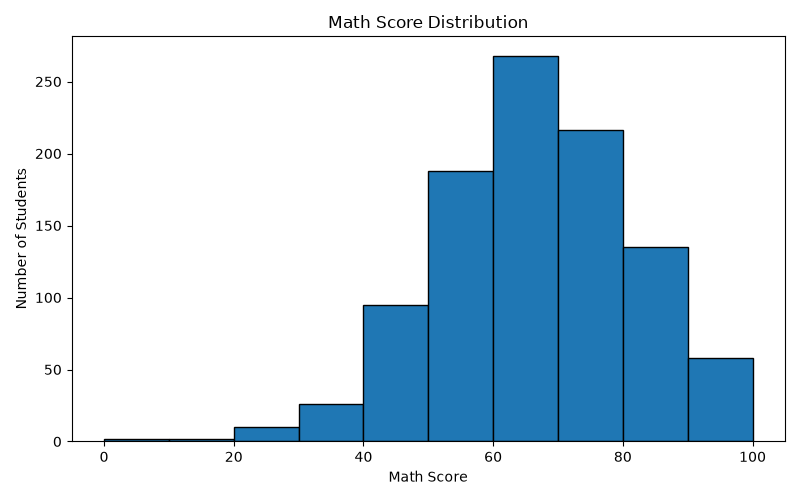

Total Rows / Students
1,000
Total Columns
8
Average Math Score
66.1
Dataset Overview
Source file: StudentsPerformance.csv
Subjects analyzed: Math, Reading and Writing
Average Scores by Subject
Compare the average scores across all three subjects.

Student Distribution by Gender

Math Score Distribution
This histogram shows how math scores are distributed.

Average Score Details
- Math Score: 66.09
- Reading Score: 69.17
- Writing Score: 68.05
Dataset Columns
- gender
- race/ethnicity
- parental level of education
- lunch
- test preparation course
- math score
- reading score
- writing score